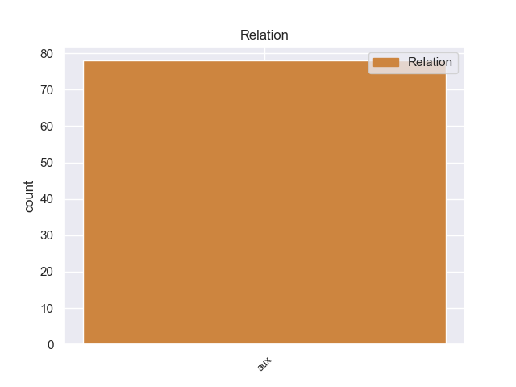
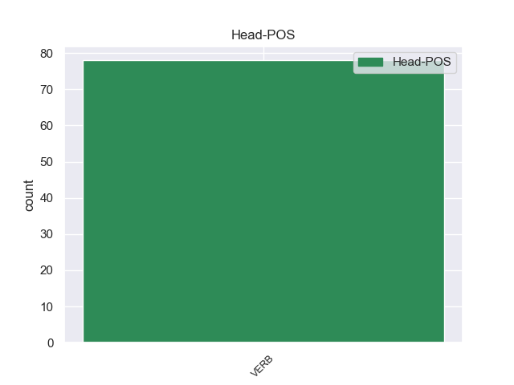
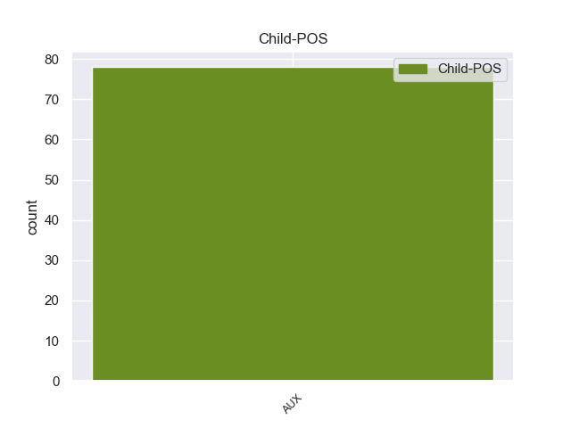

Distribution of features within this leaf



Agreement Rules sorted by frequency.
- When the dependent token is the auxiliary(aux) of the head token,
1 Η _ _ _ _ 0 _ _ _
2 Επιτροπή _ _ _ _ 0 _ _ _
3 δεν _ _ _ _ 0 _ _ _
4 μπορεί _ _ _ _ 0 _ _ _
5 να _ _ _ _ 0 _ _ _
6 εκπληρώσει _ _ _ _ 0 _ _ _
7 το _ _ _ _ 0 _ _ _
8 αίτημα _ _ _ _ 0 _ _ _
9 της _ _ _ _ 0 _ _ _
10 έκθεσης _ _ _ _ 0 _ _ _
11 ότι _ _ _ _ 0 _ _ _
12 ο _ _ _ _ 0 _ _ _
13 διορισμός _ _ _ _ 0 _ _ _
14 των _ _ _ _ 0 _ _ _
15 υπόλογων _ _ _ _ 0 _ _ _
16 για _ _ _ _ 0 _ _ _
17 τη _ _ _ _ 0 _ _ _
18 λογιστική _ _ _ _ 0 _ _ _
19 διαχείριση _ _ _ _ 0 _ _ _
20 , _ _ _ _ 0 _ _ _
21 δηλαδή _ _ _ _ 0 _ _ _
22 των _ _ _ _ 0 _ _ _
23 ανώτατων _ _ _ _ 0 _ _ _
24 υπαλλήλων _ _ _ _ 0 _ _ _
25 που _ _ _ _ 0 _ _ _
26 είναι _ _ _ _ 0 _ _ _
27 αρμόδιοι _ _ _ _ 0 _ _ _
28 για _ _ _ _ 0 _ _ _
29 την _ _ _ _ 0 _ _ _
30 τήρηση _ _ _ _ 0 _ _ _
31 της _ _ _ _ 0 _ _ _
32 λογιστικής _ _ _ _ 0 _ _ _
33 και _ _ _ _ 0 _ _ _
34 ο _ _ _ _ 0 _ _ _
35 διορισμός _ _ _ _ 0 _ _ _
36 των _ _ _ _ 0 _ _ _
37 δημοσιονομικών _ _ _ _ 0 _ _ _
38 ελεγκτών _ _ _ _ 0 _ _ _
39 πρέπει πρέπει AUX AUX Aspect=Imp|Mood=Ind|Number=Sing|Person=3|Tense=Pres|VerbForm=Fin|Voice=Act 41 aux _ _
40 να _ _ _ _ 0 _ _ _
41 πραγματοποιείται πραγματοποιώ VERB VERB Aspect=Imp|Mood=Ind|Number=Sing|Person=3|Tense=Pres|VerbForm=Fin|Voice=Pass 0 _ _ _
42 κατόπιν _ _ _ _ 0 _ _ _
43 διαβούλευσης _ _ _ _ 0 _ _ _
44 με _ _ _ _ 0 _ _ _
45 το _ _ _ _ 0 _ _ _
46 Κοινοβούλιο _ _ _ _ 0 _ _ _
47 . _ _ _ _ 0 _ _ _
Disagree Examples:
1 Έπρεπε πρέπει AUX AUX Aspect=Imp|Mood=Ind|Number=Sing|Person=3|Tense=Past|VerbForm=Fin|Voice=Act 4 aux _ _
2 επίσης _ _ _ _ 0 _ _ _
3 να _ _ _ _ 0 _ _ _
4 κάνουμε κάνω VERB VERB Aspect=Imp|Mood=Ind|Number=Plur|Person=1|Tense=Pres|VerbForm=Fin|Voice=Act 0 _ _ _
5 κάτι _ _ _ _ 0 _ _ _
6 για _ _ _ _ 0 _ _ _
7 να _ _ _ _ 0 _ _ _
8 τετραγωνίσουμε _ _ _ _ 0 _ _ _
9 τον _ _ _ _ 0 _ _ _
10 κύκλο _ _ _ _ 0 _ _ _
11 από _ _ _ _ 0 _ _ _
12 άποψη _ _ _ _ 0 _ _ _
13 οργάνωσης _ _ _ _ 0 _ _ _
14 , _ _ _ _ 0 _ _ _
15 δίνοντας _ _ _ _ 0 _ _ _
16 νόημα _ _ _ _ 0 _ _ _
17 σ _ _ _ _ 0 _ _ _
18 τη _ _ _ _ 0 _ _ _
19 συνολική _ _ _ _ 0 _ _ _
20 πολιτική _ _ _ _ 0 _ _ _
21 μου _ _ _ _ 0 _ _ _
22 ευθύνη _ _ _ _ 0 _ _ _
23 για _ _ _ _ 0 _ _ _
24 την _ _ _ _ 0 _ _ _
25 αναπτυξιακή _ _ _ _ 0 _ _ _
26 πολιτική _ _ _ _ 0 _ _ _
27 . _ _ _ _ 0 _ _ _
1 Πρέπει πρέπει AUX AUX Aspect=Imp|Mood=Ind|Number=Sing|Person=3|Tense=Pres|VerbForm=Fin|Voice=Act 4 aux _ _
2 πρώτα _ _ _ _ 0 _ _ _
3 απ _ _ _ _ 0 _ _ _
4 'όλα 'όλο VERB VERB Aspect=Imp|Mood=Ind|Number=Sing|Person=1|Tense=Past|VerbForm=Fin|Voice=Act 0 _ _ _
5 να _ _ _ _ 0 _ _ _
6 ρίξουμε _ _ _ _ 0 _ _ _
7 άπλετο _ _ _ _ 0 _ _ _
8 φως _ _ _ _ 0 _ _ _
9 σε _ _ _ _ 0 _ _ _
10 αυτό _ _ _ _ 0 _ _ _
11 το _ _ _ _ 0 _ _ _
12 ναυάγιο _ _ _ _ 0 _ _ _
13 . _ _ _ _ 0 _ _ _
1 Δεν _ _ _ _ 0 _ _ _
2 συμφωνεί _ _ _ _ 0 _ _ _
3 άραγε _ _ _ _ 0 _ _ _
4 το _ _ _ _ 0 _ _ _
5 Συμβούλιο _ _ _ _ 0 _ _ _
6 ότι _ _ _ _ 0 _ _ _
7 πρέπει πρέπει AUX AUX Aspect=Imp|Mood=Ind|Number=Sing|Person=3|Tense=Pres|VerbForm=Fin|Voice=Act 9 aux _ _
8 να _ _ _ _ 0 _ _ _
9 διατεθούν διατεθώ VERB VERB Aspect=Perf|Mood=Ind|Number=Plur|Person=3|Tense=Past|VerbForm=Fin|Voice=Act 0 _ _ _
10 περισσότερα _ _ _ _ 0 _ _ _
11 μέσα _ _ _ _ 0 _ _ _
12 σ _ _ _ _ 0 _ _ _
13 το _ _ _ _ 0 _ _ _
14 Ελεγκτικό _ _ _ _ 0 _ _ _
15 Συνέδριο _ _ _ _ 0 _ _ _
16 προκειμένου _ _ _ _ 0 _ _ _
17 να _ _ _ _ 0 _ _ _
18 διερευνά _ _ _ _ 0 _ _ _
19 ή _ _ _ _ 0 _ _ _
20 να _ _ _ _ 0 _ _ _
21 αναθεωρεί _ _ _ _ 0 _ _ _
22 τέτοια _ _ _ _ 0 _ _ _
23 αναπτυξιακά _ _ _ _ 0 _ _ _
24 σχέδια _ _ _ _ 0 _ _ _
25 όταν _ _ _ _ 0 _ _ _
26 ανακύπτουν _ _ _ _ 0 _ _ _
27 διαφωνίες _ _ _ _ 0 _ _ _
28 που _ _ _ _ 0 _ _ _
29 αφορούν _ _ _ _ 0 _ _ _
30 το _ _ _ _ 0 _ _ _
31 περιβάλλον _ _ _ _ 0 _ _ _
32 ; _ _ _ _ 0 _ _ _
1 Θα _ _ _ _ 0 _ _ _
2 πρέπει πρέπει AUX AUX Aspect=Imp|Mood=Ind|Number=Sing|Person=3|Tense=Pres|VerbForm=Fin|Voice=Act 4 aux _ _
3 να _ _ _ _ 0 _ _ _
4 χρησιμοποιηθούν χρησιμοποιώ VERB VERB Aspect=Perf|Mood=Ind|Number=Plur|Person=3|Tense=Past|VerbForm=Fin|Voice=Act 0 _ _ _
5 όλα _ _ _ _ 0 _ _ _
6 τα _ _ _ _ 0 _ _ _
7 μέσα _ _ _ _ 0 _ _ _
8 προκειμένου _ _ _ _ 0 _ _ _
9 να _ _ _ _ 0 _ _ _
10 καθοριστεί _ _ _ _ 0 _ _ _
11 η _ _ _ _ 0 _ _ _
12 κατάσταση _ _ _ _ 0 _ _ _
13 της _ _ _ _ 0 _ _ _
14 ΣΕΒ _ _ _ _ 0 _ _ _
15 σ _ _ _ _ 0 _ _ _
16 τα _ _ _ _ 0 _ _ _
17 διάφορα _ _ _ _ 0 _ _ _
18 κράτη _ _ _ _ 0 _ _ _
19 , _ _ _ _ 0 _ _ _
20 και _ _ _ _ 0 _ _ _
21 συγκεκριμένα _ _ _ _ 0 _ _ _
22 η _ _ _ _ 0 _ _ _
23 καθιέρωση _ _ _ _ 0 _ _ _
24 και _ _ _ _ 0 _ _ _
25 η _ _ _ _ 0 _ _ _
26 μεθοδική _ _ _ _ 0 _ _ _
27 χρήση _ _ _ _ 0 _ _ _
28 δοκιμασιών _ _ _ _ 0 _ _ _
29 ταχείας _ _ _ _ 0 _ _ _
30 διάγνωσης _ _ _ _ 0 _ _ _
31 . _ _ _ _ 0 _ _ _
1 Υπό _ _ _ _ 0 _ _ _
2 αυτή _ _ _ _ 0 _ _ _
3 την _ _ _ _ 0 _ _ _
4 έννοια _ _ _ _ 0 _ _ _
5 ο _ _ _ _ 0 _ _ _
6 Χάρτης _ _ _ _ 0 _ _ _
7 των _ _ _ _ 0 _ _ _
8 Θεμελιωδών _ _ _ _ 0 _ _ _
9 Δικαιωμάτων _ _ _ _ 0 _ _ _
10 συνιστά _ _ _ _ 0 _ _ _
11 - _ _ _ _ 0 _ _ _
12 και _ _ _ _ 0 _ _ _
13 αυτή _ _ _ _ 0 _ _ _
14 θα _ _ _ _ 0 _ _ _
15 είναι _ _ _ _ 0 _ _ _
16 η _ _ _ _ 0 _ _ _
17 άποψή _ _ _ _ 0 _ _ _
18 μας _ _ _ _ 0 _ _ _
19 έως _ _ _ _ 0 _ _ _
20 το _ _ _ _ 0 _ _ _
21 τέλος _ _ _ _ 0 _ _ _
22 της _ _ _ _ 0 _ _ _
23 θητείας _ _ _ _ 0 _ _ _
24 της _ _ _ _ 0 _ _ _
25 πορτογαλικής _ _ _ _ 0 _ _ _
26 Προεδρίας _ _ _ _ 0 _ _ _
27 - _ _ _ _ 0 _ _ _
28 ένα _ _ _ _ 0 _ _ _
29 ουσιαστικό _ _ _ _ 0 _ _ _
30 στοιχείο _ _ _ _ 0 _ _ _
31 ώστε _ _ _ _ 0 _ _ _
32 να _ _ _ _ 0 _ _ _
33 καταλήξουμε _ _ _ _ 0 _ _ _
34 σε _ _ _ _ 0 _ _ _
35 πιο _ _ _ _ 0 _ _ _
36 ισορροπημένα _ _ _ _ 0 _ _ _
37 αποτελέσματα _ _ _ _ 0 _ _ _
38 σε _ _ _ _ 0 _ _ _
39 αυτή _ _ _ _ 0 _ _ _
40 τη _ _ _ _ 0 _ _ _
41 Διακυβερνητική _ _ _ _ 0 _ _ _
42 , _ _ _ _ 0 _ _ _
43 η _ _ _ _ 0 _ _ _
44 οποία _ _ _ _ 0 _ _ _
45 θα _ _ _ _ 0 _ _ _
46 πρέπει πρέπει AUX AUX Aspect=Imp|Mood=Ind|Number=Sing|Person=3|Tense=Pres|VerbForm=Fin|Voice=Act 48 aux _ SpaceAfter=No
47 , _ _ _ _ 0 _ _ _
48 πέραν πέραν VERB VERB Aspect=Perf|Mood=Ind|Number=Plur|Person=3|Tense=Past|VerbForm=Fin|Voice=Act 0 _ _ _
49 τούτου _ _ _ _ 0 _ _ _
50 , _ _ _ _ 0 _ _ _
51 να _ _ _ _ 0 _ _ _
52 ασχοληθεί _ _ _ _ 0 _ _ _
53 και _ _ _ _ 0 _ _ _
54 με _ _ _ _ 0 _ _ _
55 άλλα _ _ _ _ 0 _ _ _
56 ζητήματα _ _ _ _ 0 _ _ _
57 , _ _ _ _ 0 _ _ _
58 και _ _ _ _ 0 _ _ _
59 συγκεκριμένα _ _ _ _ 0 _ _ _
60 με _ _ _ _ 0 _ _ _
61 το _ _ _ _ 0 _ _ _
62 θέμα _ _ _ _ 0 _ _ _
63 της _ _ _ _ 0 _ _ _
64 άμυνας _ _ _ _ 0 _ _ _
65 και _ _ _ _ 0 _ _ _
66 της _ _ _ _ 0 _ _ _
67 ασφάλειας _ _ _ _ 0 _ _ _
68 . _ _ _ _ 0 _ _ _